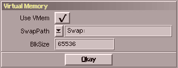

In diesem Fenster können Sie verschiedene Voreinstellungen zum virtuellen Speicher
machen. Folgend die Beschreibung der einzelnen Funktionen :
| Gadget | Beschreibung |
|---|
| Enable | Soll SoundFX überhaupt virtuellen Speicher benutzen. |
| Swappath | Hier kann der Standard-Pfad für die Auslagerung eingetragen
werden bzw. durch einen Klick auf das PopUp-Symbol ausgewählt werden.
SoundFX wird dort soviel Platz benutzen, wie benötigt wird. |
| BlkSize | Puffergröße für den Laufwerkszugriff in Bytes.
Dies hat nichts mit der Blockgröße ihrer Festplatte zu tun. |
|